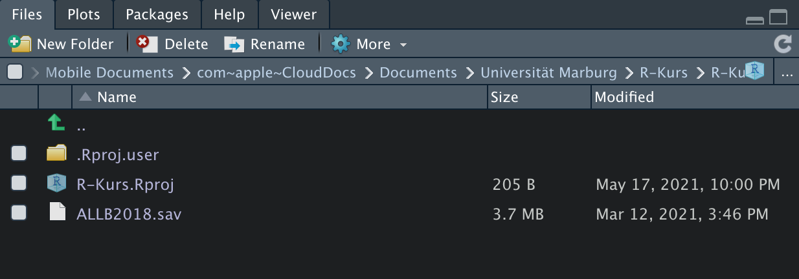

3 Datenverarbeitung
In diesem Kapitel werden wir in einem ersten Schritt das Einlesen von Datensätzen in den geläufigen Datenstrurkturen kennenlernen, um in einem zweiten Schritt die Daten nach unseren Vorstellungen zu modifizieren.
Tipp: Zur Erstellung eigener Datensätze empfehlen wir das Kapitel Datensätze selber erstellen von Andrew Ellis und Boris Mayer.
Wie Eingangs erwähnt, arbeiten wir in diesem Kurs mit den Ökosystemen tidyverse und strengejacke, um Daten umfänglich modifizieren zu können. Natürlich gibt es auch andere Möglichkeiten der Datenbearbeitung. Wir sind aber davon überzeugt, dass die “tidyverse-Methode,” an die sich auch strengejacke anschließt, eine sehr konsistente und eingängige Form des Arbeitens ermöglicht.
Wie wir später noch sehen werden, erfordern viele Arten von statistischen Analysen und insbesondere Grafik-Funktionen einen Datensatz im long-Format. So muss mitunter erstaunlich viel Zeit für die Organisation von Daten für die weitere Analyse aufgewendet werden (diese Art von Arbeit wird oft als “data wrangling” bezeichnet). Sofern Sie einen Datensatz im wide-Format in ein long-Format transformieren wollen, empfehlen wir das Kapitel: Reshaping: tidyr von Andrew Ellis und Boris Mayer.
3.1 Vorbereitung
Wir wollen mit dem Allbus-Datensatz (Allgemeine Bevölkerungsumfrage der Sozialwissenschaften) von 2018 arbeiten. Dieser lässt sich über GESIS unter: Allbus 2018 herunterladen. Der Allbus 2018 liegt gleich im long-Format vor.
Anmerkung: Der Allbus 2018 ist eine standardisierte Bevölkerungsbefragung mit überproportionaler Repräsentanz von Befragten aus den neuen Bundesländern. Um diesem Umstand gerecht zu werden, müssen die Daten des Allbus gewichtet werden. Eine ideale Voraussetzung für diesen Kurs.
Wir wollen unserem Anspruch einer zielgerichteten und forschungspraktischen Anwendung von R auch während der Bearbeitung des Allbus 2018, als Datengrundlage, gerecht werden. So greifen wir auf vergangene Forschungspublikationen zurück. Diese erlauben uns eine Orientierungslinie für kommende Beispiele zu ziehen.
Folgend erstellen wir ein Projekt in RStudio (siehe 1.8.1). Sobald der Projektordner erstellt wurde, schieben wir unseren Datensatz in den Projektordner. Durch die Festlegung unseres Arbeitsverzeichnises im Projektordner, kann R direkt auf den Datensatz zugreifen. Der Reiter Files sollte entsprechend so aussehen:

Abschließend erstellen wir ein RScript (siehe 1.8.2) und laden unsere Pakete: tidyverse, strengejacke und easystats (siehe 1.6).
Voila! Nun können wir den Datensatz einlesen.
3.2 Datensatz importieren
Durch das Packet sjlabelled aus dem Packet strengejacke können wir drei verschiedene Dateiformate einlesen.
- .sav > SPSS
- .dta > Stata
- .sas > SAS
Da wir den Allbus 2018 in .sav vorliegen haben, benutzen wir die folgende Funktion.
# SPSS
allbus2018 <- read_spss("ALLB2018.sav")Wichtig! Mit der Funktion read_spss() über das Paket sjlabelled werden alle fehlenden Werte zu NA konvertiert. Sofern Sie mit fehlenden Werten arbeiten wollen, empfehlen wir gegenwärtig noch das Paket haven über die Funktion read_sav() und dem Argument user_na = TRUE zu nutzen. Hier ist aber zu beachten, dass alle Vektoren unter der Klasse labelled_spss gespeichert werden. Das kann zu Problemen mit Funktionen aus externen Paketen führen. Eine Lösung wäre vorher die betreffenden Vektoren händisch in atomare Strukturen zu konvertieren (z.B. durch unlabel() aus sjlabelled). Zudem müssen dann alle fehlenden Werte händisch als NA makiert werden (set_na() aus sjlabelled). Dazu aber später mehr!
Sollten Ihre Daten in .dta oder .sas vorliegen, können Sie die folgenden Befehle nutzen.
# Stata
allbus2018 <- read_stata("Datensatz.dta")
# SAS
allbus2018 <- read_sas("Datensatz.sas")Anmerkung: Sollten Sie andere Dateiformate nutzen wollen, bieten sich zudem die Pakete haven, readxl und readr an.
Die Funktion read_spss besitzt vier für uns relevante Argumente. Einen Überblick über die möglichen Argumente findet sich unter: ?read_spss.
atomic.to.fac=TRUE> Alle Variablen mit beschrifteten Ausprägungsmerkmalen werden zu Faktoren konvertiert. Für uns ist dieses Argument offensichtlich unbrauchbar, da wir viele Items vom Likert-Typ im Allbus 2018 vorfinden und diese als pseudo-metrisch behandeln wollen.drop.labels=TRUE> Alle Ausprägungsmerkmale ohne Fälle werden gelöscht. Eine nützliche Funktion, sofern wir nicht mit fehlenden Werten arbeiten möchten. Durchread_spss()über das Packet sjlabelled wurden ohnehin alle vormalig fehlenden Werte zuNAkonvertiert. So können wir die überflüssigen Ausprägungsmerkmale einfach löschen.verbose=TRUE> Es wird beim Verarbeiten der Daten ein Fortschrittsbalken eingeblendet. Nur bei großen Datensätzen relevant.tag.na=TRUE> Alle fehlenden Werte werden alstagged_namarkiert. Damit werden sie in allen Berechnungen zwar alsNAeinbezogen, der große Vorteil dieses Vorgehens liegt aber im Erhalt der ursprünglichen Kodierung jener fehlenden Werte. Wir können also wie ausSPSSbekannt, jederzeit auf diese mit der Funktionreplace_na()zugreifen und sie als reguläre Werte in unsere Berechungen aufnehmen. Leider funktioniert dieses Argument gegenwärtig nur mit positiven Kodierungsmerkmalen (z.B. 98, 99), aber nicht mit negativen Ausprägungsformen (-7, -8). Wir hoffen auf eine baldige Anpassung und stehen mit dem Entwickler im Kontakt.
Damit empfehlen wir das Argument dop.labels mit TRUE bzw. T zu aktivieren.
allbus2018 <- read_spss("ALLB2018.sav", drop.labels = T)
# Noch schnell den Allbus zum tibble transformieren
allbus2018 <- tibble(allbus2018)Hervorragend! Damit haben wir erfolgreich unsere Daten in R importiert.
Um bearbeitete Datensätze zu speichern, bietet sich der folgende Befehl an.
write_spss(allbus2018, path = "allbus2018")Die Datei wird automatisch in unserem Projektordner abgelegt. Wir können aber auch über das Argument path einen neuen Speicherort definieren.
3.3 Erster Blick auf den Datensatz
Nachdem wir unseren Datensatz eingelesen haben, wollen wir uns zu Beginn einen Überblick über die vorhandenen Daten verschaffen.
Mit view() können wir den ganzen Datensatz als zusätzliches Fenster öffnen.
view(allbus2018)Über den Befehl view_df() wird uns eine HTML-Version unseres Datensatzes im Viewer angezeigt.
view_df(allbus2018)Der große Vorteil der zweiten Abbildung liegt offensichtlich in der reduzierten Darstellung. So können wir über die Spalte ID ablesen, welchen Wert unsere Variablen im Spaltenvektor des Datensatzes innehaben. Wir können entsprechend Variablen über diesen indizieren. Zudem wird uns die Variablenbezeichnung über Name, die Variablenbeschriftung über Label und die Ausprägungsmerkmale bzw. Spannweite über Values, sowie die Merkmalsbeschriftung über Value Labels ausgegeben.
Weiterhin können wir über unsere zuvor erlernten “Grundfunktionen” einen Ausschnitt des Datensatzes generieren.
# Ersten 3 Fälle
head(allbus2018, n = 3)
# Letzten 5 Fälle
tail(allbus2018, n = 5)
#Ganzer Datensatz
print(allbus2018)Die Anwendung unserer Grundfunktionen hat gegenwärtig noch den großen Nachteil, dass R versucht alle Variablen unseres Datensatzes abzubilden. Um das in den Griff zu bekommen, wollen wir uns in den folgenden Kapiteln mit der Datensatztransformation und dann Datenmanipulation beschäftigen.
3.4 Datensatz restrukturieren
Anmerkung: Ab jetzt werden wir mit dem Allbus 2018 arbeiten. Um die folgenden Befehle nachvollziehen zu können, sollte Sie den Datensatz entsprechend eingelesen haben.
Gemäß unseres forschungspraktischen Anspruchs stammen die kommenden Variablen aus einer Untersuchung politischen Wissens (Moosdorf 2020) in Bearbeitung des Allbus 2018.
Kurze Erläuterung des Forschungsinhalts
R verspricht eine enorme Flexibilität im Umgang mit Daten. Unmittelbar spürbar wird dieser Umstand in der Reorganisation von Datensätzen in neuen Objekten (gezielt aufgebaute eigene Datensätze). So wollen wir in einem ersten Schritt lernen, wie wir Datensätze grob restrukturieren und anschließend die Daten in einem neuen Datensatz speichern können. Unser Ziel ist es also einen eigenen, auf unsere Bedürfnisse zugeschnittenen, Datensatz zu erzeugen. Hierfür straten wir mit den folgenden Funktionen:
| Packet | Funktion | Verwendung |
|---|---|---|
| dplyr | select() | Selektieren von Variablen |
| dplyr | filter() | Filtern nach Fällen mit spezifischer Ausprägung |
| dplyr | arrange() | Sortiert Datensatz nach bestimmter Variable |
Das dplyr Package stellt Funktionen für alle diese Aufgaben zur Verfügung (und noch viele mehr, wir betrachten hier nur eine kleine Auswahl). dplyr besteht sozusagen aus Verben (Funktionen) für all diese Operationen, und diese Funktionen können - je nach Bedarf - auf sehr elegante Weise zusammengesetzt werden.
Wir sehen uns nun der Reihe nach die verschiedenen Funktionen und deren Verwendung an. Wir verwenden immer den %>% Operator. Der Input Datensatz ist dabei immer als erstes Argument der Funktion zu verstehen.
Select()
Mit der Funktion select() lassen sich Variablen aus einem Datensatz gezielt auswählen.
Syntax:
# Ohne Pipe
select(datensatz, variable1, variable2:variable3, -variable4)
# Mit Pipe
datensatz %>%
select(variable1, variable2:variable3, -variable4)Mit dem Befehl select() wurden aus dem Datensatz datensatz die Variablen variable1, variable2 bis variable3 ausgewählt. variable4 wurde weggelassen.
Beispielcode:
# Nur Einstellung zu Leistungsprinzip (im19) im neuen Datensatz ds speichern
ds <- allbus2018 %>%
select(im19)
ds
#> # A tibble: 3,477 x 1
#> im19
#> <dbl>
#> 1 4
#> 2 4
#> 3 2
#> 4 4
#> 5 4
#> 6 2
#> 7 4
#> 8 4
#> 9 3
#> 10 4
#> # … with 3,467 more rows
# Einstellungen zum Leistungsprinzip (im19) und Befürwortung von Ungleichheit (im20)
# in ds speichern
ds <- allbus2018 %>%
select(im19, im20)
ds
#> # A tibble: 3,477 x 2
#> im19 im20
#> <dbl> <dbl>
#> 1 4 2
#> 2 4 4
#> 3 2 3
#> 4 4 2
#> 5 4 4
#> 6 2 2
#> 7 4 4
#> 8 4 3
#> 9 3 2
#> 10 4 3
#> # … with 3,467 more rows
# Befürwortung von Ungleichheit (im20) aus ds löschen
ds <- ds %>%
select(-im20)
ds
#> # A tibble: 3,477 x 1
#> im19
#> <dbl>
#> 1 4
#> 2 4
#> 3 2
#> 4 4
#> 5 4
#> 6 2
#> 7 4
#> 8 4
#> 9 3
#> 10 4
#> # … with 3,467 more rows
# Auswahl von Einstellung zum Leistungsprinzip (im19)
# über Befürwortung von Ungleichheit (im20)
# bis Einstellung zu sozialer Ungleichheit auf Makroebene (im21) und Mikroebene (id01)
# in ds speichern
ds <- allbus2018 %>%
select(im19:im21, id01)
ds
#> # A tibble: 3,477 x 4
#> im19 im20 im21 id01
#> <dbl> <dbl> <dbl> <dbl>
#> 1 4 2 3 3
#> 2 4 4 4 2
#> 3 2 3 3 3
#> 4 4 2 2 3
#> 5 4 4 4 2
#> 6 2 2 3 3
#> 7 4 4 3 3
#> 8 4 3 3 2
#> 9 3 2 2 3
#> 10 4 3 4 3
#> # … with 3,467 more rowsWir können über select() auch die Reihenfolge unseres Spaltenvektors gezielt bestimmen.
# Reheinfolge des Datensatz ds anpassen
ds <- allbus2018 %>%
select(id01, im19, im20, im21)
ds
#> # A tibble: 3,477 x 4
#> id01 im19 im20 im21
#> <dbl> <dbl> <dbl> <dbl>
#> 1 3 4 2 3
#> 2 2 4 4 4
#> 3 3 2 3 3
#> 4 3 4 2 2
#> 5 2 4 4 4
#> 6 3 2 2 3
#> 7 3 4 4 3
#> 8 2 4 3 3
#> 9 3 3 2 2
#> 10 3 4 3 4
#> # … with 3,467 more rowsAnmerkung:
Viele Funktionen des tidyverse, auch
select(), besitzen zusätzlich Hilfsfunktionen und erweiterte Funktionsvarianten, um gezielt mehrere Variablen nach bestimmten Kriterien einschließen zu können. In Anbetracht der umfänglichen Möglichkeiten dieses Vorgehens, können wir leider in diesem Kurs nicht darauf eingehen. Sofern Sie bedarf für Ihre eigenen Arbeiten sehen, empfehlen wir in der Packetdokumentation nachzusehen unter: selection helpers und scoped verbs.Sofern Sie einzelne Variablen im Datensatz verschieben möchten, empfehlen wir die Funktion
move_columns()aus dem Paket sjmisc.
Filter()
Mit der Funktion filter() können wir eine Auswahl von Fällen treffen, die alle eine bestimmte Ausprägung einer Variable besitzen.
Tipp: Wir kennen diesen Befehl aus SPSS als select if.
Um unsere Daten ausgiebig filtern zu können, müssen wir uns kurz mit den logischen Operatoren in R beschäftigen.
< Kleiner
<= Kleiner gleich
> Grösser
>= Grösser gleich
== Gleich (testet auf Äquivalenz)
!= Ungleich
x | y x ODER y
x & y x UND y
xor(x, y) Exklusives ODER (entweder in x oder y, aber nicht in beiden)Die logischen Operatoren in R sind recht selbsterklärend und sollten bei eigener Anwendung recht schnell verstanden sein.
Zusätzlich brauchen wir noch einen infix operator.
%in% Merkmale in einem VektorSyntax:
# Ohne Pipe
filter(datensatz, variable1 == 1)
# Mit Pipe
datensatz %>%
filter(variable1 == 1)Mit dem Befehl filter() wurden nur die Fälle des Datensatzes datensatz mit der Ausprägung 1 der Variable variable1 übernommen.
Beispielcode:
# Auswahl unserer bekannten Variablen gefiltert nach Personen mit NUR der
# deutschen Staatsbürgerschaft
ds <- allbus2018 %>%
select(im19:im21, id01, german) %>%
filter(german == 1)
ds
#> # A tibble: 3,218 x 5
#> im19 im20 im21 id01 german
#> <dbl> <dbl> <dbl> <dbl> <dbl>
#> 1 4 2 3 3 1
#> 2 4 4 4 2 1
#> 3 2 3 3 3 1
#> 4 4 2 2 3 1
#> 5 4 4 4 2 1
#> 6 2 2 3 3 1
#> 7 4 4 3 3 1
#> 8 4 3 3 2 1
#> 9 3 2 2 3 1
#> 10 4 3 4 3 1
#> # … with 3,208 more rows
# Auswahl unserer bekannten Variablen gefiltert nach Personen mit der
# deutschen Staatsbürgerschaft (auch mit weiteren)
ds <- allbus2018 %>%
select(im19:im21, id01, german) %>%
filter(german %in% 1:2)
ds
#> # A tibble: 3,268 x 5
#> im19 im20 im21 id01 german
#> <dbl> <dbl> <dbl> <dbl> <dbl>
#> 1 4 2 3 3 1
#> 2 4 4 4 2 1
#> 3 2 3 3 3 1
#> 4 4 2 2 3 1
#> 5 4 4 4 2 1
#> 6 2 2 3 3 1
#> 7 4 4 3 3 1
#> 8 4 3 3 2 1
#> 9 3 2 2 3 1
#> 10 4 3 4 3 1
#> # … with 3,258 more rows
# Auswahl unserer bekannten Variablen gefiltert nach Personen mit der
# deutschen Staatsbürgerschaft (auch mit weiteren) und weiblichem Geschlecht
ds <- allbus2018 %>%
select(im19:im21, id01, german, sex) %>%
filter(german %in% c(1,2) & sex == 2)
ds
#> # A tibble: 1,610 x 6
#> im19 im20 im21 id01 german sex
#> <dbl> <dbl> <dbl> <dbl> <dbl> <dbl>
#> 1 4 4 4 2 1 2
#> 2 4 4 4 2 1 2
#> 3 4 4 3 3 1 2
#> 4 3 2 2 3 1 2
#> 5 4 3 4 3 1 2
#> 6 2 NA 4 2 1 2
#> 7 4 2 3 2 1 2
#> 8 2 3 4 2 1 2
#> 9 2 2 4 NA 1 2
#> 10 2 3 3 2 1 2
#> # … with 1,600 more rowsArrange()
Mit arrange() können wir Beobachtungen sortieren, entweder in aufsteigender oder in absteigender Reihenfolge.
Syntax:
# Aufsteigend
# Ohne Pipe
arrange(datensatz, variable1)
# Mit Pipe
datensatz %>%
arrange(variable1)
# Absteigend
# Ohne Pipe
arrange(datensatz, desc(variable1))
# Mit Pipe
datensatz %>%
arrange(desc(variable1))Beispielcode:
# Sortieren nach Alter aufsteigend
ds <- allbus2018 %>%
select(age, im19:im21, id01, german, sex) %>%
arrange(age)
ds
#> # A tibble: 3,477 x 7
#> age im19 im20 im21 id01 german sex
#> <dbl> <dbl> <dbl> <dbl> <dbl> <dbl> <dbl>
#> 1 18 3 1 2 2 1 1
#> 2 18 3 3 3 3 1 2
#> 3 18 3 3 4 3 1 2
#> 4 18 3 2 3 3 1 1
#> 5 18 4 2 4 2 1 1
#> 6 18 2 3 3 3 1 2
#> 7 18 2 1 2 2 1 1
#> 8 18 2 2 3 3 1 1
#> 9 18 2 2 3 3 1 1
#> 10 18 2 2 2 3 2 1
#> # … with 3,467 more rows
# Sortieren nach Alter absteigend
ds <- allbus2018 %>%
select(age, im19:im21, id01, german, sex) %>%
arrange(desc(age))
ds
#> # A tibble: 3,477 x 7
#> age im19 im20 im21 id01 german sex
#> <dbl> <dbl> <dbl> <dbl> <dbl> <dbl> <dbl>
#> 1 95 2 2 2 3 1 1
#> 2 94 2 2 3 4 1 1
#> 3 94 2 2 3 1 1 1
#> 4 92 3 3 4 2 1 2
#> 5 92 2 1 2 3 1 2
#> 6 92 2 2 2 3 1 2
#> 7 92 1 4 4 2 1 1
#> 8 92 NA 2 2 2 1 2
#> 9 92 2 2 3 3 1 1
#> 10 92 2 2 4 3 1 1
#> # … with 3,467 more rows3.5 Daten konvertieren
So wollen wir uns den Funktionen zuwenden, die Datentypen verändern.
Anmerkung: Wir benutzen die Pakete sjmisc und sjlabelled zur Konvertierung von Datentypen, weil die Anwendung der base R Funktionen alle Beschriftungen (siehe 3.3) unseres Datensatzes entfernen würde. Zudem sind die base R Funktionen nicht für die Nutzung in einer Pipe optimiert.
| Packet | Funktion | Verwendung |
|---|---|---|
| sjlabelled | to_factor() | Konvertiert Variable in Faktor mit numerischen levels |
| sjlabelled | to_label() | Konvertiert Variable in Faktor mit beschrifteten levels |
| sjlabelled | to_numeric() | Konvertiert Variable in numerischen Vektor |
| sjlabelled | to_character() | Konvertiert Variable in character Vektor |
| sjmisc | numeric_to_factor() | Konvertiert Variablen mit n Ausprägungsmerkmalen zu Faktor |
| sjlabelled | unlabel() | Konvertiert labelled class in atomare Struktur |
| sjmisc | ref_lvl() | Setzt Referenzkategorie |
To_factor()
Konvertiert einen Vektor in einen Faktor mit numerischen levels - äquivalent zur Funktion factor(). Sinnvoll bei Variablen mit mehr als zwei Ausprägungsmerkmalen.
Syntax:
# Ohne Pipe
to_factor(datensatz$variable1, datensatz$variable2)
# Mit Pipe
datensatz %>%
to_factor(variable1, variable2)Beispielcode:
# Geschlecht unbearbeitet
class(allbus2018$sex)
#> [1] "numeric"
# Geschlecht in Faktor mit numerischen levels konvertieren
ds <- allbus2018 %>%
select(sex) %>%
to_factor(sex)
attributes(ds$sex)
#> $levels
#> [1] "1" "2"
#>
#> $class
#> [1] "factor"
#>
#> $labels
#> MANN FRAU
#> 1 2
#>
#> $label
#> [1] "GESCHLECHT, BEFRAGTE(R)"To_label()
Konvertiert einen Vektor in einen Faktor mit beschrifteten levels. Sinvoll bei binären Ausprägungsmerkmalen.
Syntax:
# Ohne Pipe
to_label(datensatz$variable1, datensatz$variable2)
# Mit Pipe
datensatz %>%
to_label(variable1, variable2)Beispielcode:
# Geschlecht in Faktor mit beschrifteten levels konvertieren
ds <- allbus2018 %>%
select(sex) %>%
to_label(sex)
attributes(ds$sex)
#> $levels
#> [1] "MANN" "FRAU"
#>
#> $class
#> [1] "factor"
#>
#> $label
#> [1] "GESCHLECHT, BEFRAGTE(R)"To_numeric()
Konvertiert einen Faktor oder character Vektor in einen numerischen Vektor.
Syntax:
# Ohne Pipe
to_numeric(datensatz$variable1, datensatz$variable2)
# Mit Pipe
datensatz %>%
to_numeric(variable1, variable2)Beispielcode:
# Geschlecht in Faktor
ds <- allbus2018 %>%
select(sex) %>%
to_factor(sex)
# Geschlecht wieder in numerischen Vektor konvertieren
ds <- ds %>%
select(sex) %>%
to_numeric(sex)
class(ds$sex)
#> [1] "numeric"To_character()
Konvertiert einen numerischen Vektor oder Faktor in einen character Vektor.
Syntax:
# Ohne Pipe
to_character(datensatz$variable1, datensatz$variable2)
# Mit Pipe
datensatz %>%
to_character(variable1, variable2)Beispielcode:
# Geschlecht in character Vektor konvertieren
ds <- allbus2018 %>%
select(sex) %>%
to_character(sex)
class(ds$sex)
#> [1] "character"
# Folge: Alle numerischen Ausprägungsmerkmale wurden in ihre Beschriftung umgewandelt
str(ds$sex)
#> chr [1:3477] "MANN" "FRAU" "MANN" "MANN" "FRAU" "MANN" "FRAU" "MANN" ...
#> - attr(*, "label")= chr "GESCHLECHT, BEFRAGTE(R)"Numeric_to_factor()
Diese Funktion ermöglicht es uns alle Variablen eines Datensatzes anzuwählen und diese zu einem Faktor zu konvertieren. Wir müssen lediglich eine Maximalgrenze (n) als gewünschten Grenzwert zur Umwandlung angeben. Hat eine Variable weniger oder gleich viele Ausprägungsmerkmale wird sie konvertiert.
Beispielcode:
# Datensatz als Ausgangspunkt
ds <- allbus2018 %>%
select(im19:im21, id01)
class(ds$im19)
#> [1] "numeric"
# Alle Variablen haben nur bis zu vier Ausprägungsmerkmale
# Wir können sie entsprechend zu Faktoren konvertieren
# ACHTUNG: Diese Funktion ändert den Datentyp unseres Datensatzes!
# Wir geben also zusätzliche die Funktion tibble() an
ds <- ds %>%
numeric_to_factor(n = 4) %>%
tibble()
class(ds$im19)
#> [1] "factor"Wichtig! Die Funktion numeric_to_factor() hat die gleiche Wirkung wie die Funktion to_label(). Wir sparen uns lediglich den Aufwand jede Variable einzeln anzuwählen.
Unlabel()
Mit dieser Funktion können wir Variablen konvertieren, die als labelled class gespeichert wurden. Durch das Einlesen unseres Datensatzes über read_spss() werden wir diesen Befehl praktisch nie brauchen. Sollte wir den Datensatz aber über haven mit der Funktion read_sav() laden, ist es sinnvoll alle Variablen nach der Bearbeitung in eine atomare Struktur umzuwandeln - damit lassen sich spätere Probleme mit zusätzlichen Paketen vorbeugen.
Beispielcode:
# Datensatz laden und vorbereiten
library(haven)
#>
#> Attaching package: 'haven'
#> The following objects are masked from 'package:sjlabelled':
#>
#> as_factor, read_sas, read_spss, read_stata, write_sas, zap_labels
allbus2018_haven <- read_sav("ALLB2018.sav")
ds <- allbus2018_haven %>%
select(age, im19:im21, id01, german, sex)
# Beispiel
class(ds$age)
#> [1] "haven_labelled" "vctrs_vctr" "double"
# Wir konvertieren alle Variablen
# ACHTUNG: Diese Funktion ändert den Datentyp unseres Datensatzes!
# Wir geben also zusätzliche die Funktion tibble() an
ds <- ds %>%
unlabel() %>%
tibble()
class(ds$age)
#> [1] "numeric"Ref_lvl()
Die Verwendung der Funktion rev_lvl() aus sjmisc hat den großen Vorteil, dass unser Faktor im Gegensatz zur Funktion relevel() rekodiert wird und damit alle Beschriftungen auch bei numerischen levels richtig zugewiesen werden können.
Syntax:
# Ohne Pipe
rev_lvl(datensatz, variable1, lvl = 3)
# Mit Pipe
datensatz %>%
ref_lvl(variable1, lvl = 3)Wir ändern mit der Funktion ref_lvl() die Referenzkategorie von variable1 auf das Ausprägungsmerkmal 3.
Beispielcode:
# Geschlecht als Faktor
ds <- allbus2018 %>%
select(sex) %>%
to_factor(sex)
# Unsere Refrenzkategorie ist gegenwärtig "Mann"
attributes(ds$sex)
#> $levels
#> [1] "1" "2"
#>
#> $class
#> [1] "factor"
#>
#> $labels
#> MANN FRAU
#> 1 2
#>
#> $label
#> [1] "GESCHLECHT, BEFRAGTE(R)"
# Wir ändern die Refrenkategorie folgend auf "Frau"
ds <- ds %>%
ref_lvl(sex, lvl = 2)
attributes(ds$sex)
#> $levels
#> [1] "1" "2"
#>
#> $class
#> [1] "factor"
#>
#> $label
#> [1] "GESCHLECHT, BEFRAGTE(R)"
#>
#> $labels
#> FRAU MANN
#> 1 23.6 Daten beschriften
Grundständig kennt R keine beschrifteten Daten. Erst durch den zunehmenden Einfluss sozialwisschenschaftlicher Anwendungsbedürfnisse und der bevorzugten Datenformate (.sav, .dta, .sas) halten Datenbeschriftungen auch in die R-Umgebung Einzug.
| Packet | Funktion | Verwendung |
|---|---|---|
| sjlabelled | get_label() | Ruft Variablenbeschriftung ab |
| sjlabelled | get_labels() | Ruft Beschriftung von Ausprägungsmerkmalen ab |
| sjlabelled | remove_label() | Entfernt Variablenbeschriftung |
| sjlabelled | remove_labels() | Entfernt Beschriftung von Ausprägungsmerkmalen |
| sjlabelled | remove_all_labels() | Entfernt alle Beschriftungen |
| sjlabelled | var_labels() | Variable neubeschriften |
| sjlabelled | val_labels() | Ausprägungsmerkmale neubeschriften |
| sjlabelled | drop_labels() | Alle “unbesetzten” Ausprägungsmerkmale löschen |
*Die Funktion drop_labels() ist äquivalent zum Argument drop.labels = T in der Funktion read_spss(). Sofern Sie ihre Daten mit read_sav() eingelesen haben, können Sie diesen Befehl nach der Bearbeitung ihres Datensatzes zur Löschung überflüssiger Merkmalsausprägungen nutzen.
Get_label()
Mit der Funktion get_label() können wir Variablenbeschriftungen abrufen.
Syntax:
# Ohne Pipe
get_label(datensatz, variable1)
# Mit Pipe
datensatz %>%
get_label(variable1)Beispielcode:
# Variablenbeschriftung Leistungsprinzip (im19)
# und Befürwortung von Ungleichheit (im20)
allbus2018 %>% get_label(im19, im20)
#> im19
#> "EINKOMMENSDIFFERENZ ERHOEHT MOTIVATION"
#> im20
#> "RANGUNTERSCHIEDE SIND AKZEPTABEL"Get_labels()
Die Funktion get_labels() erlaubt uns das Abrufen der Beschriftung von Merkmalsausprägungen.
Syntax:
# Ohne Pipe
get_labels(datensatz, variable1)
# Nicht mit Pipe möglich!Beispielcode:
# Beschriftung der Ausprägungsmerkmale - Leistungsprinzip (im19)
get_labels(allbus2018$im19)
#> [1] "STIMME VOLL ZU" "STIMME EHER ZU" "STIMME EHER NICHT ZU"
#> [4] "STIMME GAR NICHT ZU"Remove_label()
Über die Funktion remove_label() lassen sich gezielt Variablenbeschriftungen von einzelnen Variablen oder allen Variablen im Datensatz entfernen.
Syntax:
# Einzelne Variable
# Ohne Pipe
remove_label(datensatz, variable1)
# Mit Pipe
datensatz %>%
remove_label(variable1)
# ---------
# Ganzer Datensatz
# Ohne Pipe
remove_label(datensatz)
# Mit Pipe
datensatz %>%
remove_label()Beispielcode:
# Löschung der Variablenbeschriftung - Geschlecht
ds <- allbus2018 %>%
select(sex) %>%
remove_label(sex)
# Variablenbeschriftung wurde gelöscht
ds %>% get_label(sex)
#> sex
#> ""
# Löschung aller Variablenbeschriftungen im Datensatz
ds <- allbus2018 %>%
select(im19, im20) %>%
remove_label()
# Variablenbeschriftungen wurden gelöscht
ds %>% get_label(im19, im20)
#> im19 im20
#> "" ""Remove_labels()
Die Funktion remove_labels() erlaubt es uns gezielt Beschriftungen der Ausprägungsmerkmale von einzelnen Variablen oder allen Variablen im Datensatz zu löschen.
Syntax:
# Ohne Pipe
remove_labels(datensatz, variable1)
# Mit Pipe
datensatz %>%
remove_labels(variable1)
# ---------
# Ganzer Datensatz
# Ohne Pipe
remove_labels(datensatz)
# Mit Pipe
datensatz %>%
remove_labels()Beispielcode:
# Löschung der Variablenbeschriftung - Geschlecht
ds <- allbus2018 %>%
select(im19) %>%
remove_labels(im19, labels = c(1, 2, 3, 4))
# Variablenbeschriftung wurde gelöscht
get_labels(ds$im19)
#> NULL
# Löschung aller Variablenbeschriftungen im Datensatz
ds <- allbus2018 %>%
select(im19, im20) %>%
remove_labels(labels = 0:99)
# Variablenbeschriftungen wurden gelöscht
get_labels(ds$im19)
#> NULL
get_labels(ds$im20)
#> NULLRemove_all_labels()
Wir können mit der Funktion remove_all_labels() alle (Variablenbeschriftungen und Beschriftungen von Merkmalsausprägungen) löschen.
Syntax:
# Ohne Pipe
remove_all_labels(datensatz, variable1)
# Mit Pipe
datensatz %>%
remove_all_labels(variable1)Beispielcode:
# Löschung aller Beschriftungen in einem Datensatz
ds <- allbus2018 %>%
select(im19, im20) %>%
remove_all_labels()
# Variablenbeschriftungen wurden gelöscht
ds %>% get_label(im19, im20)
#> im19 im20
#> "" ""
# Beschriftung von Ausprägungsmerkmalen wurden gelöscht
get_labels(ds$im19)
#> NULL
get_labels(ds$im20)
#> NULLVar_labels()
Mit der Funktion var_labels() können wir von einer oder mehreren Variablen die Variablenbeschriftung neu definieren.
Syntax:
# Ohne Pipe
var_labels(datensatz, variable1 = "Variablenbeschriftung")
# Mit Pipe
datensatz %>%
var_labels(variable1 = "Variablenbeschriftung")Beispielcode:
# Variablenbeschriftung neu definieren
ds <- ds %>%
var_labels(im19 = "Leistungsprinzip",
im20 = "Befürwortung von Ungleichheit")
# Variablenbeschriftungen abrufen
ds %>% get_label(im19, im20)
#> im19 im20
#> "Leistungsprinzip" "Befürwortung von Ungleichheit"Val_labels()
Die Funktion val_labels() erlaubt es uns Ausprägungsmerkmale für eine oder mehrere Variablen neu zu definieren.
Syntax:
# Ohne Pipe
var_labels(datensatz, variable1 = c("1", "2"))
# Mit Pipe
datensatz %>%
var_labels(variable1 = c("1", "2"),
variable2 = c("Hallo", "Tschüss"))Beispielcode:
# Merkmalsausprägungen neu definieren
ds <- ds %>%
val_labels(im19 = c("Erste Stufe", "Zweite Stufe", "Dritte Stufe", "Vierte Stufe"),
im20 = c("Erste Stufe", "Zweite Stufe", "Dritte Stufe", "Vierte Stufe"))
get_labels(ds$im19)
#> [1] "Erste Stufe" "Zweite Stufe" "Dritte Stufe" "Vierte Stufe"
get_labels(ds$im20)
#> [1] "Erste Stufe" "Zweite Stufe" "Dritte Stufe" "Vierte Stufe"
ds %>%
select(im19, im20) %>%
view_df()| ID | Name | Label | Values | Value Labels |
|---|---|---|---|---|
| 1 | im19 | Leistungsprinzip |
1 2 3 4 |
Erste Stufe Zweite Stufe Dritte Stufe Vierte Stufe |
| 2 | im20 | Befürwortung von Ungleichheit |
1 2 3 4 |
Erste Stufe Zweite Stufe Dritte Stufe Vierte Stufe |
3.7 Daten manipulieren
Zur Manipulation/Bearbeitung unseres Datensatzes werden wir maßgeblich mit dem dplyr-Paket aus dem tidyverse und dem Paket sjmisc aus strengejacke arbeiten. Die folgende Auswahl kann nur einen Überblick über die “wichtigsten” Funktionen dieser Pakete geben. Sofern Sie weitere Tranformationswünsche haben, sollten Sie unbedingt die Entwicklerseiten dieser Pakete aufsuchen und nach geeigneten Funktionen suchen (siehe 1.6).
| Packet | Funktion | Verwendung |
|---|---|---|
| dplyr | rename() | Umbenennen von Variablen |
| dplyr | mutate() | Erstellen und verändern von vorhandenen Variablen |
| dplyr | group_by() | Erstellt Gruppen (Teilmengen) |
| dplyr | summarise() | Daten zusammenfassen |
| dplyr | distinct() | Auswahl einzigartiger Werte |
| dplyr | case_when() | Vektorisierter if-Befehl |
| sjmisc | rec() | Rekodierung von Variablen |
| sjmisc | std() | Z-Standardisierung von Variablen |
| sjmisc | center() | Zentrierung von Variablen am Mittelwert |
| sjmisc | split_var() | Aufspaltung von Variablen in n Gruppen gleicher Größe |
| sjmisc | group_var() | Aufspaltung von Variablen in Gruppen gleicher Spannweite |
| sjmisc | row_count() | Zählung von Zeilenwerten |
| sjmisc | row_sums() | Summe der Zeilenwerte |
| sjmisc | row_means() | Mittelwert der Zeilenwerte |
| sjlabelled | set_na() | Transformiert Ausprägungsmerkmale zu fehlenden Werten |
| tidyr | drop_na() | Alle fehlenden Werte werden gelöscht |
Rename()
Die Funktion rename() erlaubt uns eine Neubeschriftung der Variablennamen vorzunehmen.
Wichtig! Die nicht umbenannten Variablen verbleiben auch weiterhin im Datensatz.
Syntax:
# Ohne Pipe
rename(datensatz, rename(variableA = variable1))
# Mit Pipe
datensatz %>%
rename(variableA = variable1)Mit dem Befehl rename() haben wir in unserem Datensatz ds die Variable variable1 in variableA umbenannt. Der neue Name muss folgend immer auf der linken Seite der Gleichung stehen.
Beispielcode:
# Neubeschriftung der Variablen Geschlecht (sex) und Alter (age)
ds <- allbus2018 %>%
select(sex, age) %>%
rename(Geschlecht = sex,
Alter = age)
ds
#> # A tibble: 3,477 x 2
#> Geschlecht Alter
#> <dbl> <dbl>
#> 1 1 62
#> 2 2 64
#> 3 1 22
#> 4 1 59
#> 5 2 30
#> 6 1 41
#> 7 2 43
#> 8 1 39
#> 9 2 40
#> 10 2 69
#> # … with 3,467 more rowsMutate()
Über die Funktion mutate() können wir neue Variablen aus schon bestehenden Variablen bilden. Vor allem erlaubt uns dieser Befehl mathematische Operationen an Variablen vorzunehmen. Wir kennen diese Befehl in SPSS als compute.
Syntax:
# Ohne Pipe
mutate(datensatz, variable1 = Berechnung)
# Mit Pipe
datensatz %>%
mutate(variable1 = Berechnung)Die Funktion mutate() erstellt eine neue Variable mit dem Namen variable1, in der wir das Ergebnis aus Berechnung speichern.
Beispielcode:
# Berechung des Alters der Befragten aus ihrem Geburtsjahr in neuer Variable (Alter)
ds <- allbus2018 %>%
select(yborn, age) %>%
mutate(Alter = 2018-yborn)
ds
#> # A tibble: 3,477 x 3
#> yborn age Alter
#> <dbl> <dbl> <dbl>
#> 1 1956 62 62
#> 2 1953 64 65
#> 3 1995 22 23
#> 4 1959 59 59
#> 5 1987 30 31
#> 6 1976 41 42
#> 7 1975 43 43
#> 8 1979 39 39
#> 9 1977 40 41
#> 10 1949 69 69
#> # … with 3,467 more rows
# Fast ;D
# Um das korrekte Alter zu ermitteln, müssten wir natürlich noch den Geburtsmonat einbeziehen!Sofern Sie nur die neu gebildeten Variablen in ihrem Datensatz behalten möchten, bietet sich der Befehl transmute() als Erweiterung von mutate() an.
Group_by()
Gesetzt den Fall, dass wir bestimmte Operationen nicht auf den ganzen Datensatz anwenden wollen, sondern nur auf Teilgruppen, ist die Funktion group_by() die ideale Lösung für uns. Über group_by() wird unser Datensatz anhand einer Gruppierungsvariable (mit nominalen Ausprägungsmerkmalen) geteilt. Anschließende Funktionen werden auf jeden Teil angewendet, bevor sich der Datensatz nach Abschluss unserer Operationen über wieder zusammensetzt (split-apply-combine). group_by() wird deshalb meistens in Kombination mit anderen Funktionen verwendet. Um nach einer abgeschlossenen Operation die Gruppierung wieder zusammen zu setzen, nutzen wir ungroup(). So können wir wieder mit einem ungruppierten Datensatz weiterarbeiten. Unsere Ergebnisse können wir über mutate() einer neuen Variable zuweisen und es damit auf alle Fälle in unserem Datensatz übertragen.
Syntax:
# Ohne Pipe
group_by(datensatz, variable1)
# Mit Pipe
datensatz %>%
group_by(variable1)Wir spalten also über die Funktion group_by() unseren Datensatz in Gruppen nach den Ausprägungsmerkmalen der variable1.
Beispielcode:
# Altersdurchschnitt nach Ost und West
ds <- allbus2018 %>%
select(age, eastwest, wghtpew) %>%
group_by(eastwest) %>%
# Wir werden in Kapitel 4 alles über gewichtete Objekte lernen (z.B. weighted_mean())!
mutate(alterOstWest = weighted_mean(age, weights = wghtpew)) %>%
ungroup()
ds %>% select(eastwest, alterOstWest)
#> # A tibble: 3,477 x 2
#> eastwest alterOstWest
#> <dbl> <dbl>
#> 1 1 50.7
#> 2 2 53.9
#> 3 1 50.7
#> 4 2 53.9
#> 5 2 53.9
#> 6 1 50.7
#> 7 1 50.7
#> 8 1 50.7
#> 9 1 50.7
#> 10 2 53.9
#> # … with 3,467 more rowsUnter Verwendung von group_by() haben wir den Datensatz in zwei separate Teile geteilt und dann den Gruppenmittelwert für Ost- und Westdeutschland errechnet. Da wir unser Ergebnis allen Fällen zuweisen wollten, haben wir eine neue Variable über mutate() gebildet. Anschließend haben wir die Teile wieder über ungroup() “zusammengesetzt” (d.h. es ist wieder ein Datensatz) und so das Ergebnis allen Fällen zugewiesen. Als Resultat besitzen alle Fälle den Altersdurchschnitt in ihrem Bundesgebiet als neue Variable alterOstWest.
Summarise()
Die Funktion summarise() ermöglicht es uns Variablen zusammen zu fassen und deskriptive Kennzahlen zu berechnen. Im Gegensatz zu mutate() gibt summarise() aber nicht den Wert für jede Beobachtung als Output aus, sondern einen Wert für jede Gruppe. summarise() wird oft zusammen mit group_by() verwendet.
Syntax:
# Ohne Pipe
summarise(datensatz, variable1 = funktion(variable))
# Mit Pipe
datensatz %>%
summarise(variable1 = funktion(variable))Mit der Funktion summarise() wurde in variable1 das Ergebnis aus function(variable) gespeichert. Hierbei wurde ein neuer Datensatz mit nur der Variable variable1 gebildet, die als einzigen Wert den Gruppenwert aus function(variable) besitzt.
Beispielcode:
# Altersdurchschnitt nach Ost und West
ds <- allbus2018 %>%
select(age, eastwest, wghtpew) %>%
group_by(eastwest) %>%
summarise(alterOstWest = weighted_mean(age, weights = wghtpew)) %>%
ungroup()
ds %>% select(eastwest, alterOstWest)
#> # A tibble: 2 x 2
#> eastwest alterOstWest
#> <dbl> <dbl>
#> 1 1 50.7
#> 2 2 53.9Distinct()
Die Funktion distinct() erlaubt uns einzigartige Werte in einem Vektor zu ermitteln.
Syntax:
# Ohne Pipe
distinct(datensatz, variable1)
# Mit Pipe
datensatz %>%
distinct(datensatz, variable1)Beispielcode:
# Geburtsjahre
ds <- allbus2018 %>%
select(yborn) %>%
distinct(yborn) %>%
arrange(yborn)
ds
#> # A tibble: 78 x 1
#> yborn
#> <dbl>
#> 1 1923
#> 2 1924
#> 3 1925
#> 4 1926
#> 5 1927
#> 6 1928
#> 7 1929
#> 8 1930
#> 9 1931
#> 10 1932
#> # … with 68 more rowsCase_when()
Über die Funktion case_when() lassen sich Kombinationen von Ausprägungsmerkmalen in neuen Variablen speichern - (Stw. Kombinationsindex). Der Befehl if-Befehl aus SPSS kommt diesem sehr nahe.
Syntax:
# Ohne Pipe
case_when(datensatz$variable1 == 1 & datensatz$variable2 == 2 ~ 1,
datensatz$variable1 == 2 $ datensatz$variable2 == 1 ~ 2)
# Mit Pipe
datensatz %>%
mutate(variableA = case_when(variable1 == 1 & variable2 == 2 ~ 1,
variable1 == 2 $ variable2 == 1 ~ 2)Die Funktion case_when() erzeugt aus den Ausprägungsmerkmalen 1 und 2 der Variablen variable1 und variable2 eine neue Ausprägung 1. Das gleiche passiert auch in den nachfolgenden Operationen mit verschiedenen Wertpaaren der variable1 und variable2.
Anmerkung: Die Funktion case_when() kann innerhalb einer Pipe praktisch nicht ohne eine “Speicherfunktion” auskommen. Entsprechend haben wir hier mutate() vorangestellt.
Beispielcode:
# Postmaterialismusindex nach Inglehart: Materialisten/Postmaterialisten
ds <- allbus2018 %>%
select(va01:va04, ingle) %>%
mutate(
inglehartIndex = case_when(
# Materialisten
va01 == 1 & va03 == 2 ~ 4,
va01 == 2 & va03 == 1 ~ 4,
# Postmaterialisten
va02 == 1 & va04 == 2 ~ 1,
va02 == 2 & va04 == 1 ~ 1
)
)
# Vergleich mit dem beigelegten Inglehartindex aus dem Allbus
# Wir müssten natürlich noch die Mischtypen berechnen!
ds %>%
select(inglehartIndex, ingle) %>%
filter(inglehartIndex %in% c(1, 4))
#> # A tibble: 1,129 x 2
#> inglehartIndex ingle
#> <dbl> <dbl>
#> 1 4 4
#> 2 4 4
#> 3 1 1
#> 4 1 1
#> 5 1 1
#> 6 1 1
#> 7 1 1
#> 8 1 1
#> 9 4 4
#> 10 1 1
#> # … with 1,119 more rowsRec()
Nun folgt die wohl wichtigste Funktion in unserem Werkzeugkasten. So vereint die Funktion rec() eine Vielzahl von uns bekannten Funktionen z.B. to_numeric() und to_factor(), var_labels() und val_labels() und schafft darüber hinaus die Möglichkeit zur gezielten Rekodierung von Variablen. Diese Funktion entspricht dem Befehl recode aus SPSS.
Syntax:
# Ohne Pipe
rec(datensatz, variable1, rec = "1=1 [niedrig]; 2,4=2 [mittel]; 4:max=3 [hoch], else=copy, 99=NA",
var.label = "Variablenbeschriftung", to.factor = TRUE)
# Mit Pipe
datensatz %$%
rec(variable1, rec = "1=1 [niedrig]; 2,3=2 [mittel]; 4:max=3 [hoch], else=copy, 99=NA",
var.label = "Variablenbeschriftung", to.factor = TRUE)variable1 aus dem Datensatz datensatz wurde rekodiert und in einen Faktor konvertiert. So wurden alle Werte entsprechend neu zugewiesen und mit neuen Beschriftungen versehen. Zudem wurde die Variablenbeschriftung angepasst.
Beispielcode:
# Rekodierung von Bildungsabschlüssen
ds <- allbus2018 %>%
select(educ) %>%
mutate(bildung = rec(educ, rec = "1,2=1 [gering]; 3,7=2 [mittel]; 4,5=3 [hoch]",
var.label = "Bildung kategorisiert", to.factor = T))
class(ds$educ)
#> [1] "numeric"
attributes(ds$bildung)
#> $levels
#> [1] "1" "2" "3"
#>
#> $class
#> [1] "factor"
#>
#> $labels
#> gering mittel hoch
#> 1 2 3
#>
#> $label
#> [1] "Bildung kategorisiert"
view_df(ds)| ID | Name | Label | Values | Value Labels |
|---|---|---|---|---|
| 1 | educ | ALLGEMEINER SCHULABSCHLUSS |
1 2 3 4 5 6 7 |
OHNE ABSCHLUSS VOLKS-,HAUPTSCHULE MITTLERE REIFE FACHHOCHSCHULREIFE HOCHSCHULREIFE ANDERER ABSCHLUSS NOCH SCHUELER |
| 2 | bildung | Bildung kategorisiert |
1 2 3 |
gering mittel hoch |
Std()
Syntax:
# Ohne Pipe
std(datensatz, variable1)
# Mit Pipe
datensatz %>%
std(datensatz, variable1)Beispielcode:
# z-Standardisierung des Leistungsprinzip (im19)
ds <- allbus2018 %>%
std(im19)
ds %>% select(im19, im19_z)
#> # A tibble: 3,477 x 2
#> im19 im19_z
#> <dbl> <dbl>
#> 1 4 1.58
#> 2 4 1.58
#> 3 2 -0.537
#> 4 4 1.58
#> 5 4 1.58
#> 6 2 -0.537
#> 7 4 1.58
#> 8 4 1.58
#> 9 3 0.522
#> 10 4 1.58
#> # … with 3,467 more rowsSuffix erklären!
Center()
Syntax:
# Ohne Pipe
center(datensatz, variable1)
# Mit Pipe
datensatz %>%
center(datensatz, variable1)Beispielcode:
# Zentrierung des Leistungsprinzip (im19) am Mittelwert
ds <- allbus2018 %>%
center(im19)
ds %>% select(im19, im19_c)
#> # A tibble: 3,477 x 2
#> im19 im19_c
#> <dbl> <dbl>
#> 1 4 1.49
#> 2 4 1.49
#> 3 2 -0.507
#> 4 4 1.49
#> 5 4 1.49
#> 6 2 -0.507
#> 7 4 1.49
#> 8 4 1.49
#> 9 3 0.493
#> 10 4 1.49
#> # … with 3,467 more rowsSplit_var()
Syntax:
# Ohne Pipe
split_var(datensatz, variable1, n = 5)
# Mit Pipe
datensatz %>%
split_var(datensatz, variable1, n = 5)Beispielcode:
# Alter in 5 gleichgroße Gruppen unterteilen
ds <- allbus2018 %>%
select(age) %>%
mutate(ageGrp = split_var(age, n = 5))
# Den Befehl frq() werden wir in Kapitel 4 umfassend besprechen!
ds %>% frq(ageGrp, weights = allbus2018$wghtpew)
#>
#> ALTER: BEFRAGTE(R) (ageGrp) <categorical>
#> # total N=3471 valid N=3471 mean=2.99 sd=1.42
#>
#> Value | N | Raw % | Valid % | Cum. %
#> --------------------------------------
#> 1 | 698 | 20.11 | 20.11 | 20.11
#> 2 | 717 | 20.66 | 20.66 | 40.77
#> 3 | 665 | 19.16 | 19.16 | 59.93
#> 4 | 696 | 20.05 | 20.05 | 79.98
#> 5 | 695 | 20.02 | 20.02 | 100.00
#> <NA> | 0 | 0.00 | <NA> | <NA>Group_var()
Syntax:
# Ohne Pipe
group_var(datensatz, variable1, size = 5)
# Mit Pipe
datensatz %>%
group_var(datensatz, variable1, size = 5)Beispielcode:
# 10 Jahre Altersspannen
# Achtung! Intervalle orientieren sich "default" an der oberen Wertgrenze des Intervalls
ds <- allbus2018 %>%
select(age) %>%
mutate(ageGrp = group_var(age, size = 10))
# Eine direkte Beschriftung ist leider nicht möglich.
# Zum Abgleich der Intervallgrenzen ist group_labels() aber sehr hilfreich!
# Group_labels() generiert in gleicher Form die gewüschten Intervalle, besitz aber als Ausprägungsmerkmale die Beschriftung.
group_labels(ds$age, size = 10)
#> [1] "10-19" "20-29" "30-39" "40-49" "50-59" "60-69" "70-79" "80-89" "90-99"
#> attr(,"label")
#> [1] "ALTER: BEFRAGTE(R)"
# Beschriftung der Intervalle
ds <- ds %>%
val_labels(ageGrp = c("10-19", "20-29", "30-39", "40-49", "50-59", "60-69", "70-79", "80-89", "90-99"))
attributes(ds$ageGrp)
#> $label
#> [1] "ALTER: BEFRAGTE(R)"
#>
#> $labels
#> 10-19 20-29 30-39 40-49 50-59 60-69 70-79 80-89 90-99
#> 1 2 3 4 5 6 7 8 9Row_count()
Befehl count in SPSS. Noch suchen: count für mehrere Werte!
Syntax:
# Ohne Pipe
row_count(datensatz, count = 1)
# Mit Pipe
datensatz %>%
row_count(count = 1)Beispielcode:
# Mitgliedsstatus in Vereinen zählen - aktives Mitglied (3)
ds <- allbus2018 %>%
select(sm04:sm14) %>%
row_count(count = 3)
ds %>% frq(rowcount, weights = allbus2018$wghtpew)
#>
#> rowcount <integer>
#> # total N=3476 valid N=3476 mean=0.61 sd=0.88
#>
#> Value | N | Raw % | Valid % | Cum. %
#> ---------------------------------------
#> 0 | 2006 | 57.71 | 57.71 | 57.71
#> 1 | 987 | 28.39 | 28.39 | 86.10
#> 2 | 353 | 10.16 | 10.16 | 96.26
#> 3 | 98 | 2.82 | 2.82 | 99.08
#> 4 | 23 | 0.66 | 0.66 | 99.74
#> 5 | 7 | 0.20 | 0.20 | 99.94
#> 7 | 1 | 0.03 | 0.03 | 99.97
#> 8 | 1 | 0.03 | 0.03 | 100.00
#> <NA> | 0 | 0.00 | <NA> | <NA>Row_sums()
Summenindex
# Ohne Pipe
row_sums(datensatz, n = Inf)
# Mit Pipe
datensatz %>%
row_sums(n = Inf)Beispielcode:
# Mitgliedsstatus in Vereinen zählen
ds <- allbus2018 %>%
select(sm04:sm07) %>%
row_sums(n = Inf)
ds %>% frq(rowsums, weights = allbus2018$wghtpew)
#>
#> rowsums <numeric>
#> # total N=3474 valid N=3474 mean=5.23 sd=1.54
#>
#> Value | N | Raw % | Valid % | Cum. %
#> ---------------------------------------
#> 4 | 1739 | 50.06 | 50.06 | 50.06
#> 5 | 342 | 9.84 | 9.84 | 59.90
#> 6 | 837 | 24.09 | 24.09 | 84.00
#> 7 | 206 | 5.93 | 5.93 | 89.93
#> 8 | 225 | 6.48 | 6.48 | 96.40
#> 9 | 49 | 1.41 | 1.41 | 97.81
#> 10 | 56 | 1.61 | 1.61 | 99.42
#> 11 | 14 | 0.40 | 0.40 | 99.83
#> 12 | 5 | 0.14 | 0.14 | 99.97
#> 14 | 1 | 0.03 | 0.03 | 100.00
#> <NA> | 0 | 0.00 | <NA> | <NA>Row_means()
Mittelwertindex
# Ohne Pipe
row_means(datensatz, n = 1)
# Mit Pipe
datensatz %>%
row_means(n = 1)Beispielcode:
# Mittelwertindex: Leistungsprinzip (im19) und Befürwortung von Ungleichheit (im20)
ds <- allbus2018 %>%
select(im19, im20) %>%
row_means(n = 1)
ds %>% frq(rowmeans, weights = allbus2018$wghtpew)
#>
#> rowmeans <numeric>
#> # total N=3436 valid N=3436 mean=2.52 sd=0.80
#>
#> Value | N | Raw % | Valid % | Cum. %
#> --------------------------------------
#> 1.00 | 222 | 6.46 | 6.46 | 6.46
#> 1.50 | 320 | 9.31 | 9.31 | 15.77
#> 2.00 | 830 | 24.16 | 24.16 | 39.93
#> 2.50 | 711 | 20.69 | 20.69 | 60.62
#> 3.00 | 752 | 21.89 | 21.89 | 82.51
#> 3.50 | 303 | 8.82 | 8.82 | 91.33
#> 4.00 | 298 | 8.67 | 8.67 | 100.00
#> <NA> | 0 | 0.00 | <NA> | <NA>Set_na()
Mit der Funktion set_na() wollen wir lernen, wie wir einzelne oder mehrere Ausprägungsmerkmale in NA konvertieren können.
Syntax:
# Ohne Pipe
set_na(datensatz, variable1, na = c(1, 3))
# Mit Pipe
datensatz %>%
set_na(variable1, na = c(1, 3))Mit haben mit der Funktion set_na() in variable1 die Ausprägungsmerkmale 1 und 3 als NA definiert.
Beispielcode:
# Definition der Altersspanne 61 bis 99 als NA
ds <- allbus2018 %>%
select(age) %>%
set_na(age, na = 61:99)
view_df(ds)| ID | Name | Label | Values | Value Labels |
|---|---|---|---|---|
| 1 | age | ALTER: BEFRAGTE(R) | range: 18-60 | |
Drop_na()
Syntax:
# Einzelne Variable
# Ohne Pipe
drop_na(datensatz, variable1)
# Mit Pipe
datensatz %>%
drop_na(variable1)
# --------
# Ganzer Datensatz
# Ohne Pipe
drop_na(variable1)
# Mit Pipe
datensatz %>%
drop_na()Beispielcode:
# Fehlende Werte in Leistungsprinzip (im19) löschen
ds <- allbus2018 %>%
drop_na(im19)
# Alle fehelnden Werte im Datensatz löschen
ds <- allbus2018 %>%
drop_na()Referenz:
Moosdorf, D. (2020): Kritik an sozialer Ungleichheit – Macht politisches Wissen den Unterschied?. In Tausendpfund, M. & B. Westle (Hrsg.), Politisches Wissen in Deutschland: Empirische Analysen mit dem ALLBUS 2018 (S. 165–197). Wiesbaden: Springer VS. https://doi.org/10.1007/978-3-658-30492-8_6.